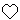
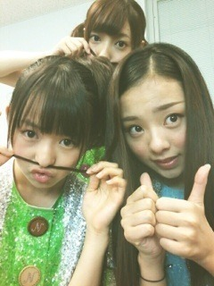

| 2012/08 08 Wed | 199回目*marika |
いつも読んでくださってる方、
初めて読んでくださった方、
コメントしてくださった方、
ありがとうございます。
ライブの日が近づいてきて
ドキドキしてる

ああああああ
頑張ろ。
**********
 最近音楽なに聞いてる？
最近音楽なに聞いてる？
 セカオワ
セカオワ
 まりかは誕生日プレゼントで
まりかは誕生日プレゼントで
すごい印象強かったものとか
すごい嬉しかったものとか
なんか思い出深い
プレゼントってあるの？？
お手紙かなぁ。
呼び方が定まらないので
『まりか姫』で良い？
ひ、姫⁈
いいけど、ちょとはずかしい
 ///
///
///
お父さんのどこが
一番好きですか？
めっちゃおもしろいところ。
握手とか行けないんですけど、
まりかさん推しでいてもいいですか？
来れなくても全然いいです！
受験やお仕事で忙しかったり、
遠かったり...
それでも応援しててほしいです><
ありがとうございます‼
好きな人出来たら、
自分から告るタイプ？
んー...わからんなぁ

その時によるのかな。わからん。
美術が得意と言ってたけど、
宿題やってくれる??笑
自分の宿題で
いっぱいいっぱいだよ

手伝ってよ笑←
何フェチとかある(´・ω・`)?
声かな。
**********
♪人はなぜ走るのかMV
公開されました！
乃木坂46が学校内で
サッカーしてるぞ

FIFA U-20女子ワールドカップの
テーマソングです。

これ、載せたっけ⁇
載せてないか

マイブームは
メンバーの髪の毛で
鼻こちょこちょすることです。
いやがられる
 笑
笑
笑
なんか、みんなの髪触るのすきなの。
ははははは

明日...頑張りまりか！
まりか
コメント(127)
2012/08/08 00:42